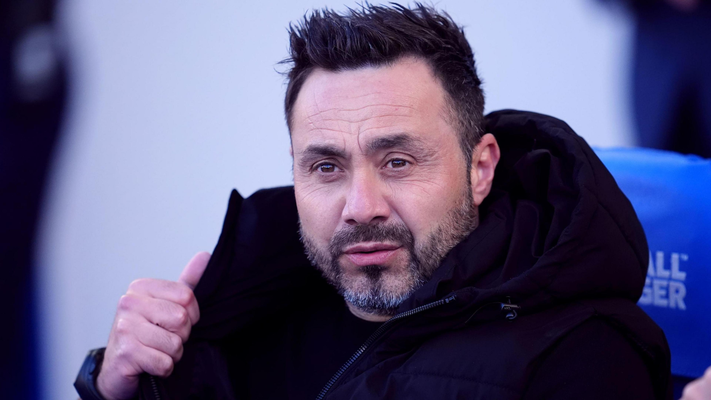
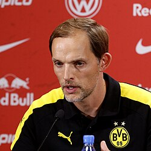

This site includes all the latest news of today's world.

Tottenham Hotspur have entered into advanced talks with Roberto De Zerbi,
former Brighton manager now is willing to take charge immediately.
While he is open to the role of head coach,
he preffered to wait until the end of the season.
But Tottenham have begun stepping up efforts to agree to the deal.
Talks are postive and sources indicate they will be heading towards a final agreement.

Uefa will freeze broadly tickets price for the Euro 2028,
It means supporters can buy five tickets for the pirce of a single World Cup parking space.
The Euros will see 40% tickets allocated to the two most afforable "Fans First" catergories.
For Euro 2024 in Germany had the cheapest group stage tickets costing 30 euros and 60 euros.
Uefa aims to keep these below 30 Euros and 60 Euors Respectively.

England manager Thomas Tuchel
says he's not angry with the players who have withdrawn from the squadd before the freindly with Japan.
Noni Madueke, Declan Rice, Bukayo Saka, and Adam Wharton have dropped out since 1-1 draw with uruguay.
this is the final England camp before deadlines for World Cup squads later.
Tcuhel said he was "Dissapointed, but now with the playrs, in fact we want to have everyone in good spirits and health."
He said "It's the reality of end of season and the end of March;
reality of having players in Europeon matches and more than just one competition with all the cups going on."
They open their World Cup campgain againt croatia on 17 June and faace Ghana on 23 June and Panama on 27 June.